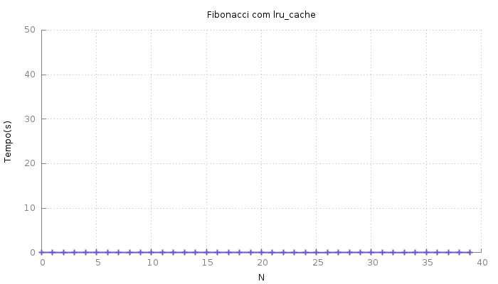

Programação Dinâmica
No campo de teoria da computação é comum ouvir o termo Programação Dinâmica. Pessoalmente achei bastante difícil entender este conceito. Todos os lugares que procurava via exemplos usando matrizes, o que deixava o código bastante confuso. Finalmente, depois de algumas semanas, entendi do que se tratava.
Programação dinâmica é uma técnica de desenvolvimento de algoritmos que divide o problema em questão, salva as soluções destes subproblemas e as combina para resolver o problema maior.
A parte de dividir o problema em problemas menores é bastante comum em algoritmos do tipo dividir-e-conquistar, mas estes não necessariamente salvam as soluções dos subproblemas, pois costumam ser resolvidos apenas uma vez cada. Algoritmos que fazem uso do Programação Dinâmica apresentam sobreposição na árvore de recursão e, para evitar resolver mais de uma vez um subproblema, salvamos seu resultado em uma espécie de cache.
Fibonnaci
Um exemplo bem simples de problema que pode fazer uso de programação dinâmica é o de se calcular o enésimo elemento da Sequência de Fibonacci.
Uma solução para este problema é:
def fibonacci(n):
if n < 2:
return n
return fibonacci(n - 1) + fibonacci(n - 2)
Temos os resultados:
>>> res = [fibonacci(i) for i in range(11)]
>>> res
[0, 1, 1, 2, 3, 5, 8, 13, 21, 34, 55]
Esta solução funciona, claramente. O problema é, como existe uma sobreposição dos subproblemas (fibonacci(n - 1) chamará a função com o mesmo valor que sua chamada "irmã" fibonacci(n - 2)), vários subproblemas estão sendo resolvidos inúmeras vezes. Fazendo com que esta soluçã não escale bem.
Testei a solução acima com vários valores de entrada e medi os tempos
de execução. São eles:
 Podemos melhorar o desempenho salvando os resultados parciais em um
Podemos melhorar o desempenho salvando os resultados parciais em um
cache, uma estrutura de dados auxiliar. Algo como:
cache = {}
def fibonacci_cached(n):
if n in cache:
return cache[n]
if n < 2:
cache[n] = n
else:
cache[n] = fibonacci_cached(n - 1) + fibonacci_cached(n - 2)
return cache[n]
Esta segunda solução também funciona:
>>> res = [fibonacci_cached(i) for i in range(11)]
>>> res
[0, 1, 1, 2, 3, 5, 8, 13, 21, 34, 55]
E em tempo muito melhor:
O tempo não é zero, apenas mantive a escala do gráfico anterior para tornar a diferença graficamente notável.
Apesar da melhoria em desempenho, a solução com cache não é muito agradável.
Não é muito aconselhável fazer uso de variáveis globais. Este problema
pode ser superado fazendo uso de classe ou, de forma mais pythonica,
decorator.
Fazer uso destas ferramentas mais avançadas adicionaria,
sem sombra de dúvida, complexidade ao código. Felizmente a biblioteca
padrão do python oferece um decorator justamente para este tipo de situação.
O lru_cache implementa um cache com tamanho limitado (o que é bom,
afinal ninguém quer explodir a memória do computador!) que descarta,
quando necessário os registros menos recentemente utilizados (tradução
livre para o significado do acrônimo LRU - Least Recently Used). E torna o código eficiente e elegante.
Incorporando lru_cache ao exemplo temos:
from functools import lru_cache
@lru_cache(maxsize=128)
def fibonacci(n):
if n < 2:
return n
return fibonacci(n - 1) + fibonacci(n - 2)
Assim como as outras, esta solução funciona da mesma forma:
>>> res = [fibonacci(i) for i in range(11)]
>>> res
[0, 1, 1, 2, 3, 5, 8, 13, 21, 34, 55]
E o desempenho ficou como da solução com cache: .
Nota: O decorator lru_cache será limitado e terá a funcionalidade de LRU
apenas se o argumento maxsize for um inteiro positivo. Caso seja None
o cache será ilimitado.